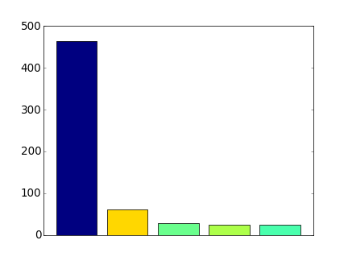

In the first iteration of Locopoly rules a player will randomly jump from one location to another within 1 km. Will it be possible to jump to every location in a city?
This question can be reduced to a hierarhical clustering problem, one of the standard problems of machine learning. In general, the clusters can be calculated based on some linkage criteria. For the formulated problem we need to use minimum or single-linkage clustering.
The clustering is done based on various distances, not necessary in Euclidian space. Here, we parse POIs from an OpenStreetMap file and convert them to (x,y) grid neglecting curvature of the Earth.
Any clustering libraries may be used. We use mlpy, scipy-cluster also seems to be interesting.
For jumping distance of 1 km several clusters are formed in Donetsk at the moment. The city was formed from many settlement and modern POIs distribution is a good indication of history. Still, all this clusters will be connected in the future when more places are mapped.
The largest cluster has more than 450 spots—a good initial playground.
The code is available at Github. It is good to reference:
- GIS
- parsing OSM file with cElementTree
- choosing only POIs with name key
- converting lat,lon to x,y
- parsing OSM file with cElementTree
- mlpy (machine learning)
- hierarhical clustering
- Matplotlib
- scatter plot
- bar plot with colors
- getting colors from cmap
- Python
- truncation of text